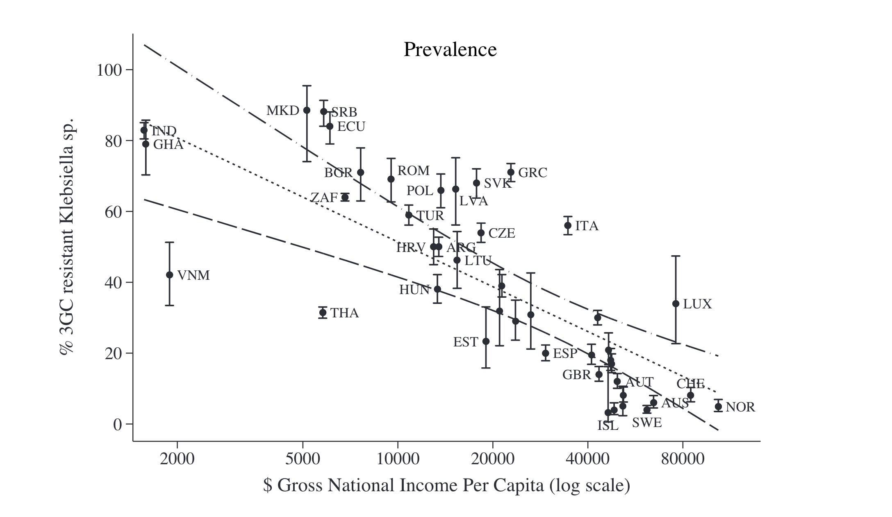

AMR in Low-Middle Income Countries (LMICs)
COVID-19 has focused global attention on the inequitable access to the tools needed to control the pandemic, with high-income countries (HICs) and low- and middle-income countries (LMICs) at opposite ends of the scale. In the case of antibiotic resistance, a pandemic projected to cause four times more deaths per year than occurred from COVID-19 during 2020, inequity between HICs and LMICs is a major challenge:5
How is LMIC defined? The World Bank defines lower middle income economies as countries where the per capita gross national income (GNI) falls between $1,026 and $3,955. The countries that are part of the upper MIC classification with a GNI that falls between $3,956 and $12,475.
LMICs are particularly susceptible to the emergence and rapid spread of AMR for several reasons:
- High population density
- Lack of access to clean water, suboptimal sewage systems, poor sanitation
- Poor healthcare infection control practices
- Increasing consumption of antimicrobials in humans
- Lack of regulation on antimicrobial use in farming, and pharmaceutical industry pollution
The health and economic impact of AMR is also more severe and longer lasting in LMICs versus HICs. AMR is generally associated with:
Increased mortality and health costs
Antibiotics effective against AMR are more expensive and not affordable for many patients
Increasing use of antibiotics with efficacy against AMR leads to higher resistance to “last-line” antibiotics
In fact, carbapenem consumption is increasing at a rapid pace in poor economies.6

Figure 4. Progress on vaccinations by GDP per capita, circle size represents population. Source: Financial Times
- Lack of access to antibiotics in some poorer countries, a driver of mortality particularly in children under 5 years of age;
- Lack of access to newer, expensive antibiotics needed to treat the increasing toll of MDR and XDR bacterial infections;
- Inequity in ability to provide the basic public health interventions that drive many of the social determinants of infectious diseases in LMICs
The singular effectiveness of access to clean water, sanitation and hygiene, called WASH, in preventing the spread of disease is well understood, yet billions of people around the world still lack access to these necessities.7
- Currently, 2.1 billion people live without access to safe drinking water and 4.5 billion people are without access to adequate sanitation.
- Every day, 1300 children under 5 die from preventable diarrhoeal diseases, including cholera, caused by contaminated water and poor sanitation.
- 1 in 3 healthcare facilities lacks soap and water or hand sanitizer where staff provide patient care. Billions of patients worldwide must rely on these facilities.
- In some countries, up to 90% of women receive routine prophylactic antibiotics during childbirth, highlighting the conditions under which they are delivering their babies and what would cause the inevitability of infection
The cumulative lack of WASH adds up to children and adults not only getting unnecessarily sick—with the associated suffering, medical costs and loss of income or schooling—they are relying on antibiotics to get better.8 The challenge here is that WASH is a public works solution for a public health problem. WASH is not a pill or ‘quick fix’. It requires capital investment, system strengthening, and behaviour change to ensure that clean water and functional toilets are available and utilized day-in and day-out. These issues require a different set of skills than those possessed by medical and public health professionals.
In LMICs, an estimated 670 million people still practice open defaecation in 2017, and only one in three people have access to safe drinking water, resulting in high rates of diarrheal disease and equally large amounts of inappropriate antibiotic use.8 According to WHO surveys, vaccination, a cornerstone of infection prevention and reducing the need for antibiotic use, is suboptimal in both HICs and LMICs. In 2019, global third-dose coverage for childhood pneumococcal vaccination in 149 member states was only 48%, and global rotavirus vaccine coverage was estimated at 39%. In South Africa, middle-income country, procures less than 1 million doses of influenza vaccine for its annual influenza season, despite in excess of 10 million people being identified as high-risk for influenza and prioritized for vaccination.5
Optimizing infection prevention on farms and making improvements to housing conditions and feed to reduce illness in animals is also critical in food production to offset the need for antibiotic growth promotion or metaphylaxis in food production animals. While there has been progress in the reduction of antibiotic use in farms in the EU and other HICs, attention nor funding for such improvements in LMICs has not even been proposed. “It’s one thing being told to reduce your antibiotic use in food production, it’s another to have the means to do so, even for the most committed resource-poor farmer.5
As discussed above, the emergence of antimicrobial resistance (AMR) is a complex phenomenon and is intensified by selective pressure through antibiotic use in humans, animals, and agriculture. The transmission of AMR to humans occurs from contact with animals (including food), other humans, and the environment. Transmission is facilitated by several factors, including high population density, lack of access to clean water, suboptimal sewage systems, poor sanitation, and poor healthcare infection control practices, all of which are more common in LMICs. With the increasing consumption of antimicrobials in humans, lack of regulation on antimicrobial use in farming, and pharmaceutical industry pollution, it may not be surprising that relatively higher levels of AMR among human pathogens are being reported from LMIC.

Figure 5. Prevalence of third-generation cephalosporin-resistant (3GCR) Klebsiella spp. by gross national income per capita and predicted values with 95% confidence intervals according to a linear regression model. Data are from reference.9.
The impact of
The international focus on awareness, surveillance, infection prevention, stewardship and research and development (R&D) of new antibiotics is actually widening the equity gap by pouring millions of dollars into R&D of new antibiotics and surveillance systems, while the intervention that could benefit LMICs the most, infection prevention, has received a relatively few resources.
What are the possible solutions? Recently COVID-19 has refocused attention that in infectious diseases The Access to COVID-19 Tools (ACT)-Accelerator that we will discuss in Model 2 has shown that financial contributions from HICs to a LMIC-pool can improve equitable access to diagnostics, therapeutics and vaccines, but it is conceivable that the same model could be broadened to encompass tools that would support major social change for AMR.
How can the effectiveness of antimicrobials be preserved?
Strategies for the prevention and containment of AMR often focus on:
- Improvement of infection diagnosis and prescription practices (antimicrobial stewardship)
- Reduction of antimicrobial use in agriculture and environmental exposure in general
- Development of new antimicrobials
- Access to essential medicines of assured quality
- Improvement of AMR surveillance
Antimicrobial stewardship is a coordinated program that promotes and focuses on the appropriate use of antimicrobials and strategies to improve patient outcomes, reduces antimicrobial resistance, and decrease the spread of infections caused by multidrug-resistant organisms. These programs may be implemented through the use of institution-specific treatment guidelines and an antibiotic stewardship team (typically infectious diseases physicians with a clinical pharmacist) who carry out full-time activities to promote and encourage appropriate antibiotic use. While these programs have been shown to be successful, many gaps remain in the knowledge of how to optimally design and sustain stewardship programs in the hospital, and such programs are rarely implemented in community settings where most antibiotic consumption takes place.


Figure 6. Examples of antimicrobial stewardship efforts and outcomes. Source: ECDC